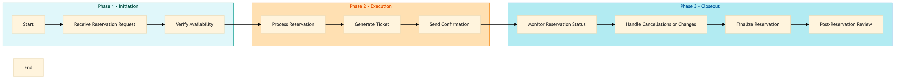

| Role | Steps |
|---|---|
| Front Desk Agent | 1.1 2.1 2.2 2.3 3.2 3.3 |
| Revenue Manager | 1.2 3.1 3.4 |
| Concierge | 2.3 3.2 3.3 |
| Step | Name | Role | System | Input | Output | KPI | Dec? | Exc? | Pain Point / Risk |
|---|---|---|---|---|---|---|---|---|---|
| 1.1 | Receive Reservation Request | Front Desk Agent | Oracle OPERA Cloud | Guest reservation request (phone call, email, online booking) | Reservation record in Oracle OPERA Cloud | < 3 min | N | Y | Handling conflicting requests or limited availability |
| 1.2 | Verify Availability | Revenue Manager | Oracle OPERA Cloud, IDeaS G3 RMS | Reservation record in Oracle OPERA Cloud | Availability confirmation | < 1 min | Y | N | Real-time availability checks |
| 2.1 | Process Reservation | Front Desk Agent | Oracle OPERA Cloud, SynXis CRS | Availability confirmation | Confirmed reservation record in Oracle OPERA Cloud | < 2 min | N | Y | Handling special requests or dietary restrictions |
| 2.2 | Generate Ticket | Front Desk Agent | Oracle MICROS Simphony, Book4Time | Confirmed reservation record in Oracle OPERA Cloud | Digital ticket for the restaurant reservation | < 1 min | N | Y | Ensuring ticket compatibility with guest devices |
| 2.3 | Send Confirmation | Front Desk Agent, Concierge | Oracle OPERA Cloud, Marriott Bonvoy CRM | Digital ticket for the restaurant reservation | Confirmation notification to guest (email, SMS, app) | < 1 min | N | Y | Handling undelivered notifications |
| 3.1 | Monitor Reservation Status | Revenue Manager, Concierge | Oracle OPERA Cloud, Knowcross HotSOS | Confirmed reservation record in Oracle OPERA Cloud | Reservation status update | < 5 min | Y | N | Real-time monitoring of reservations |
| 3.2 | Handle Cancellations or Changes | Front Desk Agent, Concierge | Oracle OPERA Cloud, SynXis CRS | Guest cancellation or change request | Updated reservation record in Oracle OPERA Cloud | < 2 min | Y | Y | Managing last-minute changes |
| 3.3 | Finalize Reservation | Front Desk Agent, Concierge | Oracle OPERA Cloud, Oracle MICROS Simphony | Updated reservation record in Oracle OPERA Cloud | Finalized reservation and ticketing process | < 1 min | N | Y | Ensuring all details are correct before finalizing |
| 3.4 | Post-Reservation Review | Revenue Manager, Concierge | Oracle OPERA Cloud, Microsoft Power BI | Finalized reservation record in Oracle OPERA Cloud | Performance report for revenue management | < 10 min | N | Y | Analyzing trends and making data-driven decisions |
Process for handling restaurant reservations and ticketing at a Marriott full-service hotel using Oracle OPERA Cloud PMS and other integrated systems.